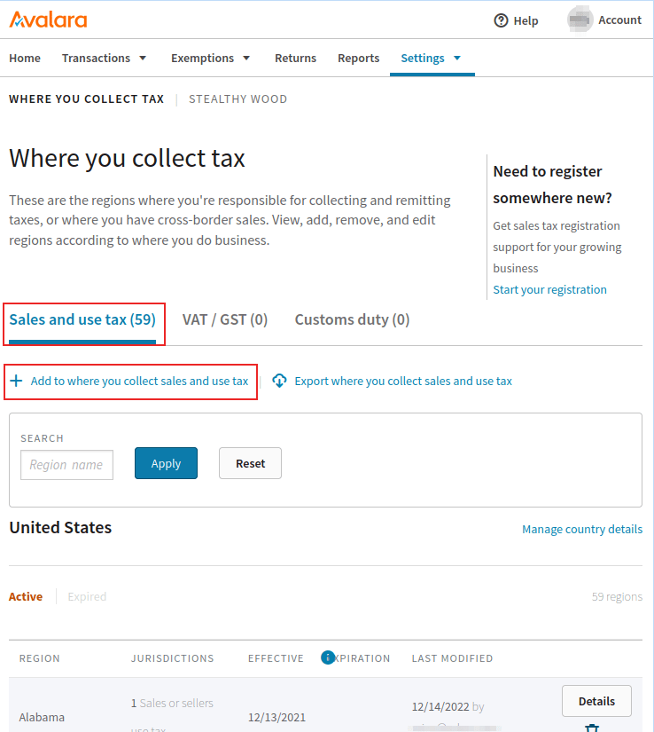
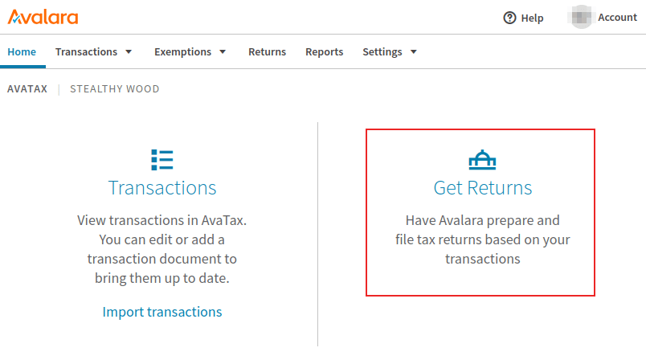

Avalara (Avatax) portal¶
Avalara’s (AvaTax) management console offers account management options including: viewing/editing the transactions sent from Odoo to AvaTax, details on how the taxes are calculated, tax reporting, tax exemption management, and tax return resources.
Tip
Avalara is the software developer of the tax software, AvaTax.
To access the console, first, navigate to either Avalara’s sandbox or production environment. This will depend on which type of account was set in the integration. Log in to the management console.

See also
For more information see Avalara’s documentation: Activate your Communications Customer Portal account.
Transactions¶
To access transactions, click in the Transactions link on the main dashboard upon logging into the Avalara (Avatax) portal. To manually access the Transactions page, while logged into the Avalara console, navigate to .

Edit transaction¶
Click into a transaction to reveal more details about the transaction. These details include sections on Invoice detail, Additional info, and Customer info. Click Edit document details to make changes to the transaction.
A Discount can be added to adjust the invoice. This is especially useful in cases where the transaction has already synced with Avalara / AvaTax, and changes need to be made afterward.
Filter¶
Filter transactions on the Transactions page, by setting the From and To fields, and configuring other fields to filter by, including:
Document Status: any of the following options, All, Voided, Committed, Uncommitted, or Locked.
Document Code: any of the following options, Exactly match, Starts with, or Contains.
Customer/Vendor Code: the customer/vendor code in Odoo (e.g.
Contact18).Country: the country this tax was calculated in; this is a text field.
Region: the region of the country, which varies based on the Country selection.
Click Filters to access the following filter conditions:
Document Type: any of the following selections, All, Sales Invoice, Purchase Invoice, Return Invoice, Inventory Transfer Inbound Invoice, Inventory Transfer Outbound Invoice, or Customs Invoice.
Import ID: represents the import ID of the document.
Sort by¶
On the Transactions page, transactions will be listed below, according to the set Filter, located in the top half of the page. The following columns are available by default, to sort by ascending or descending order:
Doc Code: either of the following options, Exactly match, Starts with, or Contains.
Doc Status: either of the following options, All, Voided, Committed, Uncommitted, or Locked.
Cust/Vendor Code : this is the customer/vendor code in Odoo (e.g. Contact18).
Region: this is the region of the country, this will vary based on the Country selection.
Amount: the numeric amount of the total amount on the Odoo document.
Tax: the numeric amount of the tax applied to the total.

Customize columns¶
Additional columns can be added by clicking the Customize columns. On the resulting popover window, click the drop-down menu for the column that should be changed.
The following columns can be added for additional transactional information:
AvaTax calculated: the amount of tax calculated by AvaTax.
Country: the country this tax was calculated in; this is a text field.
Cust/vendor code: the customer/vendor code in Odoo (e.g.
Contact18).Currency: the standardized abbreviation for the currency the amount total is in.
Doc date: the document’s date of creation.
Doc status: any of the following options, All, Voided, Committed, Uncommitted, or Locked.
Doc type: any of the following selections, All, Sales Invoice, Purchase Invoice, Return Invoice, Inventory Transfer Inbound Invoice, Inventory Transfer Outbound Invoice, or Customs Invoice.
Import ID: represents the import ID of the document.
Last modified: timestamp of the last time the document was modified.
Location code: the location code used to calculate the tax, based on the delivery address.
PO number: the purchase order number.
Reference code: the Odoo reference code (e.g. NV/2024/00003)
Region: the region of the country,which varies based on the Country selection.
Salesperson code: the numeric ID of the user assigned to the sales order in Odoo.
Tax date: the month/day/year of the tax calculation.
Tax override type: where an exemption would appear, should there be none, the field populates with None.
To add a new column click the Column.
See also
For more information on AvaTax transactions, refer to this Avalara documentation: Transactions.
Import-export¶
While on the Transactions, click Import transactions or Export transactions to import or export transactions.
Reports¶
To access reporting, navigate to the link in the top menu of the Avalara management console. Next, select from one of the available reporting tabs: Transactions reports, Liability & tax return reports, or Exemption reports.
Tip
Additionally, there is a Favorites tab and Downloads tab. The Favorites tab contains any favorited report configurations for the Avalara user. The Downloads tab contains a list view where the user can download the high-volume transaction reports created in the last 30 days.
Make a selection for the Report Category, and the Report Name, under the Select a report section.
Next, fill out the Select report details section. These options will vary based on the tab selected above.
Depending on the report size, the following two options are available in the section labeled, Select the approximate number of transactions for your report: Create and download the report instantly (for small reports) and Create and download the report in the background (for larger reports). Select one or the other depending on the volume of transactions in this report.
Finally, under the section labeled, Report preview and export make a selection of the file type to download. Either a .PDF or .XLS can be chosen. Alternatively, the file can be previewed by selecting the Preview option.
After making all the configurations, click Create report to download the report. Click Make this report a favorite to save the report configuration to the user’s favorites.
After the report is created, click Download to download the file to the device.
Tip
Select a pre-configured report from the Frequently used reports section of the reporting dashboard.
Access this list by clicking on the Reports option in the top menu of the Avalara management console, and scroll to the bottom of the page.
Add more jurisdictions¶
Additional jurisdictions (tax locations) can be added in the Avalara management console. Navigate to either Avalara’s sandbox or production environment. This will depend on which type of account was set in the integration.
Next, navigate to . Choose between the three different tabs, depending on the business need. The first tab is Sales and use tax, where tax can be collected for the United States. Click the Add to where you collect sales and use tax to add another location where the company collects sales and use tax.
The second option, is the VAT/GST tab where the Add a country or territory where you collect VAT/GST can be selected to add another country or territory where the company collects VAT/GST.
Finally, on the far-right, is the Customs duty tab, where a country can be added where the company collects customs duty. Simply click on the Add a country where you calculate customs duty icon below the tab.
Tax exemption certificate¶
Tax exemption certificates for customers can be added into the Avalara management console, so that AvaTax is aware of which customers may be exempt from paying certain taxes. To add an exception certificate navigate to . From there, click on the Add a certificate to configure an exemption.
Warning
An Avalara subscription to Exemption Certificate Management (ECM) is required in order to attach certificate images, and to be ready for an audit. For more on subscribing to this add-on, visit Avalara.
End-of-year operations¶
Avalara’s services include tax return services, for when it is time to file taxes at the end of the year. To access Avalara’s tax services log, into the management portal. Then, from the main dashboard, click Returns. Avalara will prompt the Avalara user to log in for security purposes, and redirect the user to the Returns portal.
Click Get started to begin the tax return process. For more information, refer to this Avalara documentation: About Managed Returns.
Tip
Alternatively, click on the button in the top menu of the Avalara management console.